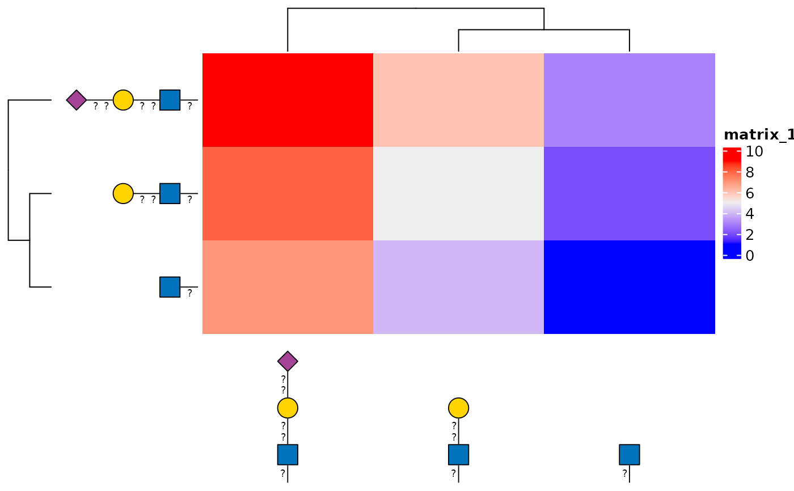

anno_glycan() creates a ComplexHeatmap::AnnotationFunction() that draws
glycan cartoons in the order used by a ComplexHeatmap heatmap. The cartoons
follow row or column clustering, reordering, and splitting.
Usage
anno_glycan(
structure,
which = c("column", "row"),
side = NULL,
size = 0.4,
angle = 0,
hjust = NULL,
vjust = NULL,
nudge_x = 0,
nudge_y = 0,
show_linkage = TRUE,
style = style_glydraw(),
width = NULL,
height = NULL,
show_name = FALSE,
red_end = NULL,
orient = NULL
)Arguments
- structure
A character vector of glycan structure strings supported by
glyparse::auto_parse()or aglyrepr::glycan_structure()vector. Its order must match the rows or columns of the heatmap matrix.- which
Whether the cartoons label heatmap
"column"or"row"observations.- side
Side on which the annotation is placed. Column annotations accept
"bottom"or"top"; row annotations accept"left"or"right". Defaults to the corresponding glycan scale position.- size
Positive scalar that uniformly scales each cartoon. Defaults to
0.4.- angle
Rotation in degrees applied to each cartoon independently of its drawing orientation. Defaults to
0.- hjust
Horizontal justification.
NULLuseshjust_red_end()for a top or bottom annotation with a vertical orientation,1or0for a left or right annotation with a horizontal orientation, respectively, and0.5for other side-orientation combinations.- vjust
Vertical justification.
NULLuses0for a top or bottom annotation with a vertical orientation,vjust_red_end()for a left or right annotation with a horizontal orientation, and0.5for other side-orientation combinations.- nudge_x
Horizontal adjustment of each cartoon, in millimetres. Positive values move cartoons to the right. Defaults to
0.- nudge_y
Vertical adjustment of each cartoon, in millimetres. Positive values move cartoons upward. Defaults to
0.- show_linkage
Whether to show glycosidic linkage annotations inside the cartoons. Defaults to
TRUE.- style
A
style_glydraw()object that controls the cartoons' visual appearance.- width
Optional
grid::unit()width for a row annotation.NULLcalculates the width from the rendered cartoons.- height
Optional
grid::unit()height for a column annotation.NULLcalculates the height from the rendered cartoons.- show_name
Whether ComplexHeatmap should show the annotation name. Defaults to
FALSEbecause the cartoons normally replace row or column names.- red_end
Reducing-end annotation.
NULL, the default, usesred_endfromstyle. A non-NULLvalue overridesstyle$red_end.- orient
Glycan drawing orientation.
NULL, the default, selects the orientation fromside:"up"for"bottom"or"top","left"for"left", and"right"for"right".
Details
Column annotations use the visual defaults of scale_x_glycan(): vertical
cartoons anchored at their reducing ends and aligned along their bottom
bounds. Row annotations use the defaults of scale_y_glycan(): horizontal
cartoons aligned along their right bounds and anchored at their reducing
ends. side should match the heatmap annotation side and defaults to
"bottom" for columns and "left" for rows.
The required annotation width or height is calculated from the largest
rendered cartoon, including rotation and perpendicular nudging. Supply
width for row annotations or height for column annotations to override
the calculated size.
Examples
if (requireNamespace("ComplexHeatmap", quietly = TRUE)) {
mat <- matrix(
seq_len(9),
nrow = 3,
dimnames = list(paste0("row", 1:3), paste0("column", 1:3))
)
structures <- c(
"GlcNAc(??-",
"Gal(??-?)GlcNAc(??-",
"Neu5Ac(??-?)Gal(??-?)GlcNAc(??-"
)
ComplexHeatmap::Heatmap(
mat,
show_row_names = FALSE,
show_column_names = FALSE,
left_annotation = ComplexHeatmap::rowAnnotation(
glycan = anno_glycan(structures, which = "row")
),
bottom_annotation = ComplexHeatmap::HeatmapAnnotation(
glycan = anno_glycan(structures, which = "column")
)
)
}
